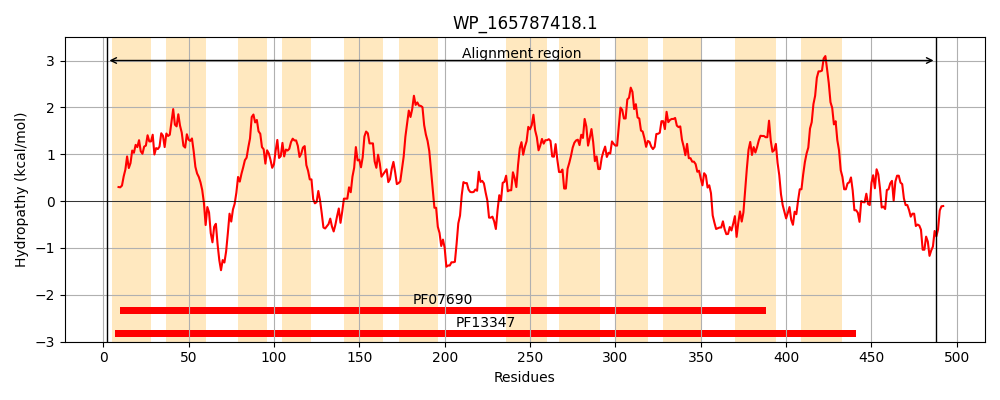
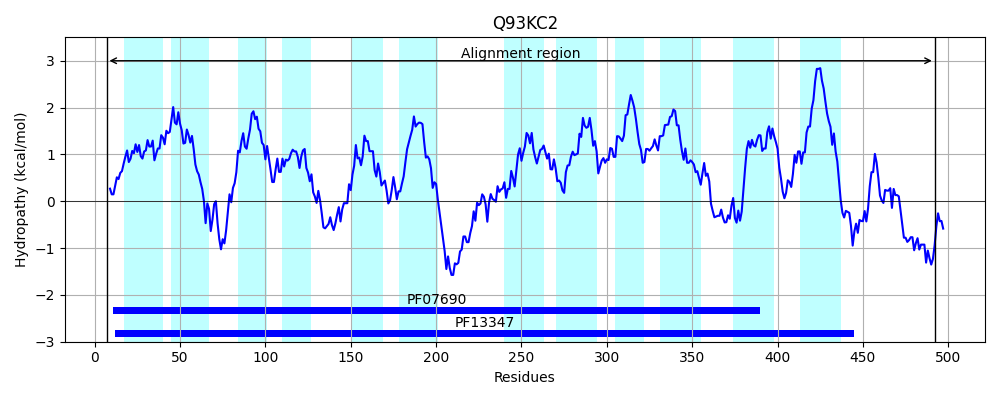
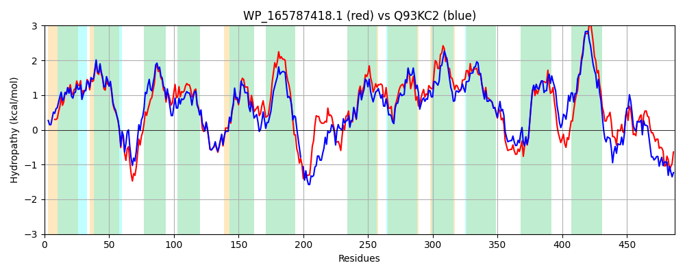

Hit Accession: Q93KC2
Hit TCID: 2.A.2.5.1
Hit Description: gnl|BL_ORD_ID|17306 gnl|TC-DB|Q93KC2|2.A.2.5.1 Oligogalacturonide transporter - Erwinia chrysanthemi.
Mach Len: 487
e:0.000000
Query TMS Count : 12
Hit TMS Count: 12
TMS-Overlap Score: 12.650000
Predicted Substrates:None
BLAST Alignment:
Score: 1722 , Bit scores: 667 bits, E-value: 0.0e+00, Alignment length: 487, Percentage identity: 66
Query: 2 LRHQLAYGGGNLLGSGALAISGAWLLYFYTTFCGLTLIEASFIFSVASIIDAISNPLMGYLTDNFGKTRLGKRFGRRRFFLLIGIPLMMFYPLLWVEGLSFWYYLCTYVVFEIIYTSIMVPYETLATEMTDDFSLRSKLTGYKAIFGKLANFLAAFIPGQFILLYGKDSATPFFLTGLTYGVILIVAISCLWLCSWERKREEEIETSASKGLLSTLLSLAKDMRSTFYLRVFRKHLGMYLCGFGAEWLFASIFTYFVIFVLQHDPAMVAGLNSLNSILQLISTALFIGLCVKKGFSKPYILALGIVIFAVLLYTSLWFFHLPSGLATVLMFGITVLFGLGTGGVYYIPWTVYTFLADVDEIYTGRRREGIYAGAMTFSGKILRSIVVFSMGAILSFYGFQSKAHSQPESAVTAIAVVFCVGVIALALAAIVFSKQMKLDRKAHLVVLQEVARIKAGGKISDIAPDVRVIVEDLVGHRYEECWGNSKL 488
L+H L YG NLLGSGALAISGAWL+YFYTTFCGL+L+EA+ IFSVAS+IDAISNP+MGY++DNF TR+G+ FGRRRFF+L+GIPL++ YP+LW+EGL FWYYL TYV+FE+IYTSIMVPYETLATEMT DF +RSKLTG KAIFGK+ANFLAAFIPGQFI +YGKDSATPFF TGL YG I+ A+ L+L SWER E+ ++ L +L L+ DM STF LR+FRKHLGMYL GFGAEWLFAS FTYF++F L+ A+V+ LNS +SI+Q IST LFIG+CVK GF +PY +AL +VI +V+ Y +L+F +++FGIT +FGL TGG+YYIPWTVYTFLADVDE+ TGRRREGIYAGAMTF+GK++RS++VF+MG ILS +GF S +QPESAV AI VF +GV+ALA+ AI +S QM+LDRK H+++LQE+ARIKAGG I+D+ P+ R + E+L G +YE+CWGN+ L
Sbjct: 7 LKHTLCYGSANLLGSGALAISGAWLMYFYTTFCGLSLVEAAAIFSVASVIDAISNPIMGYISDNFYNTRIGRLFGRRRFFILLGIPLVLVYPMLWMEGLGFWYYLSTYVLFELIYTSIMVPYETLATEMTTDFKVRSKLTGSKAIFGKVANFLAAFIPGQFIGIYGKDSATPFFYTGLAYGFIMCAAMIALYLTSWERS-PSEVAREHTQNLWQSLKKLSIDMASTFRLRIFRKHLGMYLFGFGAEWLFASAFTYFIVFGLKQSTAVVSQLNSFSSIMQFISTFLFIGICVKMGFGRPYRMALMVVIVSVIAYAALYFTGWSQTATIIVLFGITAIFGLSTGGIYYIPWTVYTFLADVDEVLTGRRREGIYAGAMTFAGKMVRSVIVFAMGWILSQFGFVSGKAAQPESAVLAIVGVFSLGVVALAVVAIYYSTQMRLDRKNHMILLQEIARIKAGGAIADVPPEARAVAEELTGWKYEQCWGNNPL 492 | Protein Hydropathy Plots: |
|---|
|  |  |
Pairwise Alignment-Hydropathy Plot:
|
|---|
|  |